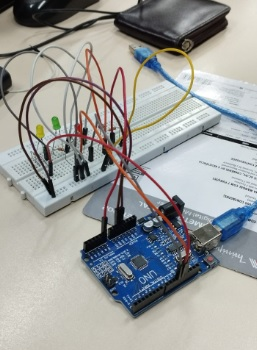
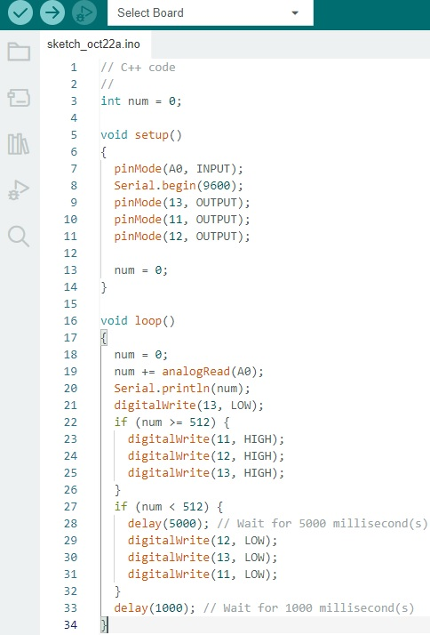
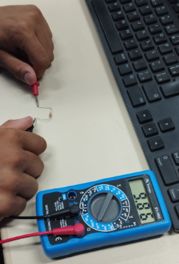
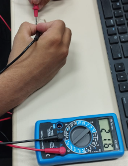

LDR com a montágem física no ARDUÍNO na Prática:

Exemplo de código C++ no IDE ARDUÌNO:

Filmagem do controle de iluminação na prática:
Foto das medidas realizadas com o multímetro:


Explicação:
Esse programa foi feito com o entuito de quando o sensor detectar a luz ligar, e quando nn ouver mais desligar.
ligação do LDR e LEDs no Tinkercad: